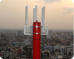
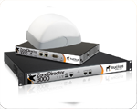
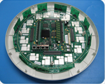
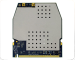
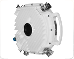
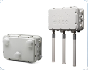

Компания Wavion Wireless Networks представляет на рынке инфраструктур сетей широкополосного беспроводного доступа свои революционные эффективные решения, основанные на технологии Beamforming. Обеспечивая возможность создания беспрецедентно больших зон покрытия с высокой пропускной способностью, решения компании Wavion позволяют операторам, сервис-провайдерам и государственным структурам предоставлять высокий уровень сервиса в городской и сельской местности, с более чем 50-ти процентной экономией на капитальных вложениях и эксплуатационных расходах.
Компания Ruckus Wireless выпускает функцильнально полную серию устройств Wi-Fi стандарта 802.11a/b/g/n с поддержкой схемы MESH, которые, благодаря оригинальным решениям в части адаптивных антенных систем и алгоритмов обработки сигналов, обеспечивают значительный выигрыш в производительности, в том числе в условиях интерференционных помех, а также в радиусе зоны радиопокрытия по сравнению с традиционными системами Wi-Fi.
Xirrus - лидер на рынке высокопроизводительного оборудования Wi-Fi доступа
Платформы Wi-Fi доступа от Xirrus обеспечивают самую высокую в отрасли производительность и широчайший диапазон Wi-Fi доступа. Решения от Xirrus обеспечивают 2-кратное увеличение диапазона, 4-кратное зоны покрытия, -8-кратное полосы частот, 14-кратное пропускной способности и требуют на 75% меньше оборудования, кабельной проводки, портов комуникации и времени инсталяции по сравнению со всеми существующими на сегодняшний день решениями по данному направлению.
Компания Ubiquiti Networks , Inc . является одним из лидеров по проектированию и производству беспроводного оборудования. Компания производит весь спектр Wi-Fi оборудования. Основное внимание при проектировании Компания уделяет функциональности, простоте инсталяции и обслуживания Оборудования. Все программное обеспечение используемое в беспроводном оборудовании является открытым. Компания поощряет сторонние программные разработки.
Корпорация Proxim Wireless является одним из лидеров в производстве высоконадежного оборудования для построения беспроводных сетей любой сложности. Наиболее известные продукты Proxim Wireless – это семейство Wi-Fi и MESH ORiNOCO, Ethernet-мосты Tsunami и транковые системы Lynx. Оборудование Proxim Wireless позволяет создавать беспроводные транспортные решения, превосходящие требования ITU к производительности сетей 4G, для предоставления услуг передачи видео, голоса и данных.
Cisco – світовий лідер у галузі мережевих технологій для Інтернету. Сьогодні мережі є необхідним підґрунтям бізнесу, освіти, державного управління та домашніх комунікацій, а IP-технології Cisco є фундаментальною основою цих мереж
Технічні засоби, програмне забезпечення та послуги Cisco використовуються для створення Інтернет-технологій, які дозволяють особам, організаціям, країнам збільшувати продуктивність, покращувати задоволення потреб клієнтів та підсилювати власну конкурентоспроможність. Технології Cisco дають можливість легкого доступу до інформації у будь-якому місці та у будь-який час. Ім’я Cisco стало синонімом Інтернету та покращення продуктивності за допомогою Інтернет-технологій.